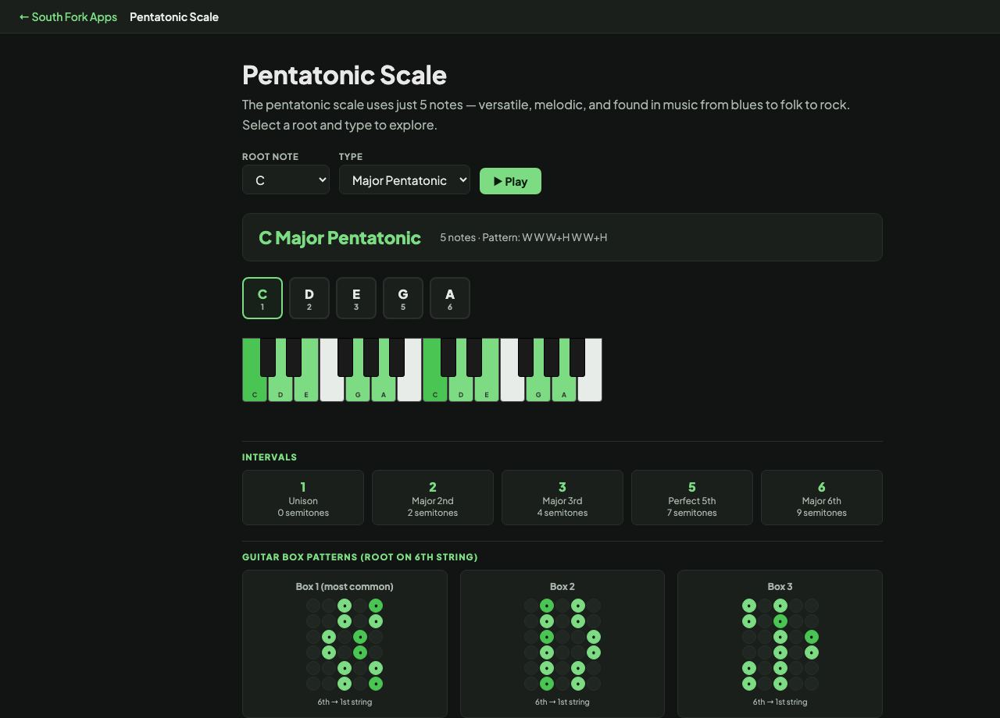

Pentatonic Scale
The pentatonic scale uses just 5 notes — versatile, melodic, and found in music from blues to folk to rock. Select a root and type to explore.
Pentatonic Scale
Pentatonic Scale Explorer shows major and minor pentatonic scales for any root on a piano keyboard, and plays them back. Five notes per octave instead of seven, which is why these scales are so forgiving to improvise with.
How to use it
- Pick a root note.
- Choose Major Pentatonic or Minor Pentatonic.
- Press Play to hear the scale, and read the highlighted keys.
What gets left out, and why it matters
A major pentatonic takes the major scale and removes the fourth and seventh degrees, leaving 1, 2, 3, 5 and 6. Those two removed notes are the ones that create the strongest dissonance against the tonic chord, which is why what remains sounds consonant against almost anything.
A minor pentatonic is 1, flat 3, 4, 5 and flat 7. It is the same five pitches as the major pentatonic a minor third above it, which is why A minor pentatonic and C major pentatonic contain identical notes and simply resolve to different homes.
Worked example
Comparing the two pentatonic types on the same five pitches:
- C major pentatonicC D E G A
- A minor pentatonicA C D E G
Result: Identical notes, different root. The tonal centre, not the note set, is what makes one sound bright and the other sound bluesy.
When it helps
- Improvising over a chord progression without hitting a wrong note.
- Writing a melody that stays singable.
- Learning your first soloing vocabulary on guitar or piano.
- Understanding why so much folk and blues music worldwide uses five notes.
Common mistakes
- Playing only the five notes and never leaving them. The removed notes are exactly what create tension, so avoiding them forever makes solos bland.
- Assuming major and minor pentatonic are unrelated. They are the same set viewed from different roots.
